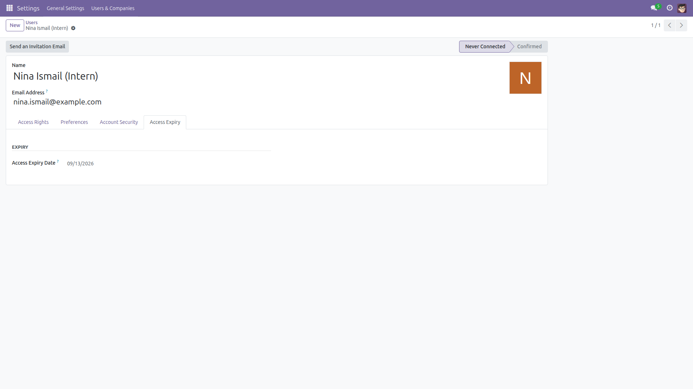
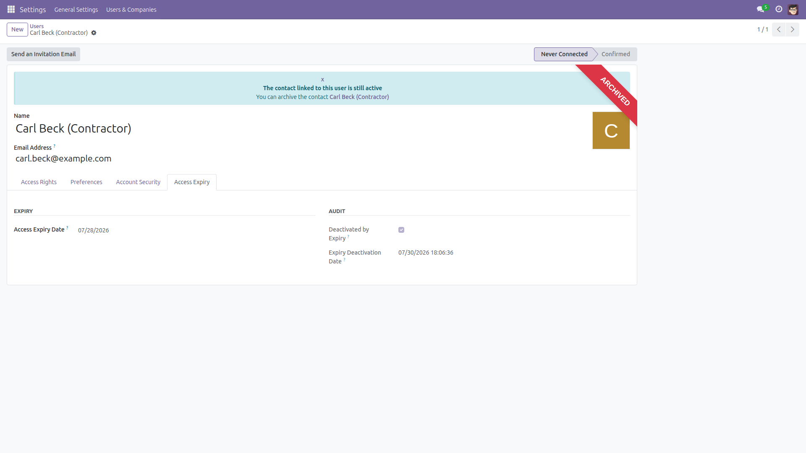
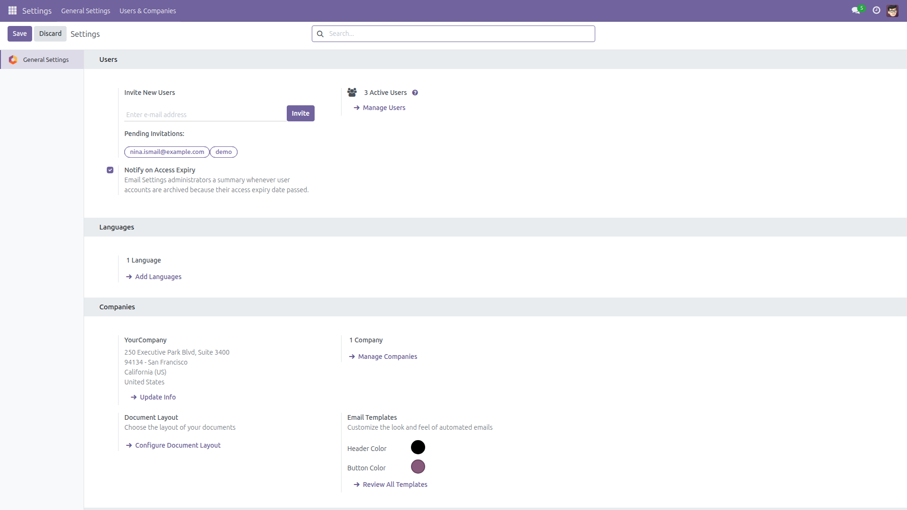
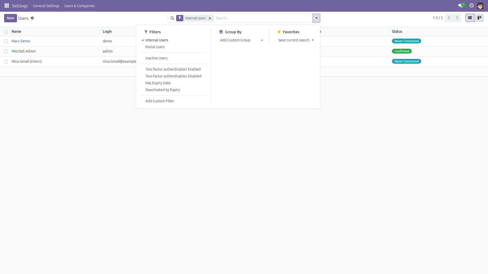

Contractors lose access on schedule. Automatically.
Offboarding shouldn't depend on someone remembering. Set an end date on any user account — contractors, interns, auditors, temporary staff — and a daily job archives it the moment the date passes. Clean audit trail, admin notification, zero configuration. Free and open source (LGPL-3), identical behavior on Odoo 14.0 through 19.0.

Set the Access Expiry Date on the user form — a contractor end date, an intern’s last day. That is the entire setup.

Once the date passes, the daily job archives the account — audit flag and exact timestamp on the Access Expiry tab.

Optional: control the administrator email summary in Settings → Users ("Notify on Access Expiry", on by default).

Ready-made filters on Settings → Users: "Has Expiry Date" and "Deactivated by Expiry".
base_setup, mail) are required.Behavior is identical on every supported series (14.0 – 19.0). Only internal view markup differs per version.
Questions, bugs or feature requests?
Email f.ashraf.dev1@gmail.com — I read and answer every message.
License: LGPL-3 · Source on GitHub · Issues and contributions welcome.